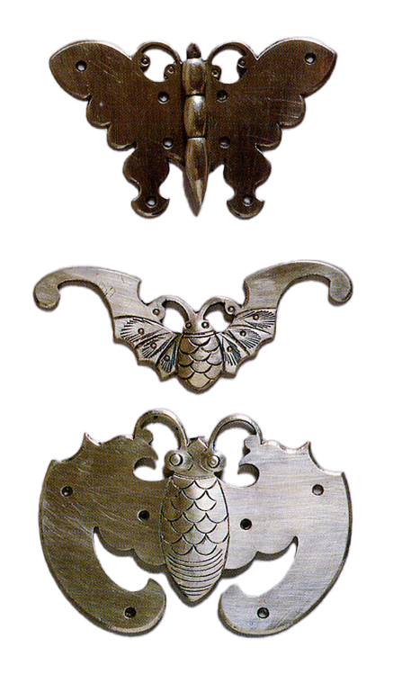

두석장
목제품을 비롯한 각종 가구에 덧대는 금속장식을 만드는 기술

제작과정
주석이나 백동을 넣어 가열해 녹이고 이것을 망치로 두들겨 0.5㎜두께의 판철로 늘이고 면을 반듯하게 다듬는다. 여기에 본을 따라 작도와 정으로 오리고 줄로 다듬고 활비비와 정으로 문양을 새긴 뒤 사기분말을 묻힌 천으로 문질러 광택을 내 완성한다.
사용재료
황동과 백동을 사용하며, 보다 사치스러운 장석으로 꾸미기 위해서는 백동을 쓴다.
특징
목가구의 결합부분을 보강하고 열고 닫을 수 잇는 자물쇠 등의 금속제 장식을 장석이라고 하며, 종류로는 장석을 붙이는 물건에 따라 농장석, 궤장석, 의걸이장석, 벼락닫이장석, 모반장석, 전통장석 등이 있으며, 문양은 팔봉, 사모, 아자, 나비, 박쥐, 붕어, 학 등이 있다. 자물쇠는 귀자쇠통, 비각쇠통, 거북장쇠통, 타래쇠통, 네모희자쇠통 등이 있다.
전승자
| 보유구분 | 이름 | 성별 | 기예능 | 지역 | 인정일 |
|---|---|---|---|---|---|
| 보유자 | 김극천(金克千) | 남 | 두석 | 경남 | 2000-07-22 |
| 보유자 | 박문열(朴文烈) | 남 | 두석 | 서울 | 2000-07-22 |
소재지
기타